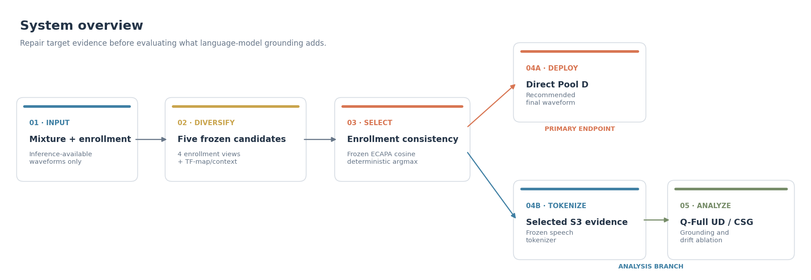

Case 1 — recovery from an enrollment view
The primary follows the interferer. A deterministic two-second view of the same enrollment produces target-consistent evidence. WER: 100% → 0%; speaker margin: −.285 → +.520.
View spectrogram comparison

Research demo · ICASSP 2027 submission in preparation
A target speech extractor can produce clean, intelligible speech from the wrong speaker. We repair the acoustic evidence first, then study how an LLM speech decoder can be kept faithful to that evidence.
Audio examples Main results GitHub repository
Study status: Clean TEST is frozen; Noisy TEST is running once under a locked protocol.
LLM-based speech generation cannot recover target content that is absent from its acoustic conditioning. We therefore treat wrong-speaker extraction as an evidence-interface failure. From the same mixture and target enrollment available at inference, a frozen TSE family produces five complementary candidates. A frozen speaker encoder selects the candidate most consistent with the enrollment. The selected waveform can be used directly or supplied to a token-based speech generator with constrained speech grounding (CSG). The central claim is deliberately narrow: candidate selection repairs speaker confusion; CSG controls drift in the optional generative branch.

Lower is better for WER and switch rates; higher is better for speaker margin and estimated perceptual quality. Results marked DEV are used for selection and must not be presented as TEST.
Frozen held-out evaluation, 6,000 trials.
| System | WER ↓ | C-sw. ↓ | A-sw. ↓ | Spk. margin ↑ | DNSMOS P.808 ↑ |
|---|---|---|---|---|---|
| Primary WeSep | 13.68 | 7.00 | 6.98 | .449 | 3.688 |
| Pool D direct | 6.54 | .88 | .78 | .506 | 3.699 |
| Pool D → Q-Full UD | 14.08 | 1.00 | .43 | .422 | 3.705 |
| Pool D → fixed CSG | 12.74 | 1.00 | .23 | .422 | 3.699 |
| Pool D → selected GNR | — | — | — | — | — |
Reading. Pool D direct more than halves WER and sharply reduces speaker confusion. CSG improves the Q-Full branch over unconstrained decoding, but does not overtake the direct selected waveform.
Frozen selection set, 8,400 trials: 6,000 natural and 2,400 controlled mixtures.
| System | WER ↓ | C-sw. ↓ | A-sw. ↓ | Spk. margin ↑ | DNSMOS OVRL ↑ | UTMOS ↑ |
|---|---|---|---|---|---|---|
| Primary WeSep | 53.50 | 20.11 | 19.54 | .269 | 2.243 | 1.997 |
| Pool D direct | 46.75 | 11.86 | 10.93 | .332 | 2.132 | 1.930 |
| Pool D → Q-Full UD | 66.87 | 13.68 | 2.99 | .362 | 3.063 | 3.164 |
| Pool D → fixed CSG | 62.66 | 13.44 | 1.27 | .370 | 3.066 | 3.047 |
| Pool D → adaptive CSG | 62.92 | 13.42 | 1.64 | .369 | 3.079 | 3.104 |
| Pool D → GNR (K20/R2) | 65.96 | 13.44 | 1.67 | .369 | 3.081 | 3.118 |
Reading. Evidence repair improves content fidelity, while generation improves estimated perceptual quality and acoustic speaker consistency at the cost of higher WER. GNR is retained as a negative ablation rather than promoted as the main method.
One frozen run is in progress. Partial results are intentionally not reported.
| System | WER ↓ | C-sw. ↓ | A-sw. ↓ | Spk. margin ↑ | DNSMOS ↑ | UTMOS ↑ |
|---|---|---|---|---|---|---|
| Primary WeSep | — | — | — | — | — | — |
| Pool D direct | — | — | — | — | — | — |
| Pool D → Q-Full UD | — | — | — | — | — | — |
| Pool D → fixed CSG | — | — | — | — | — | — |
| Pool D → adaptive CSG | — | — | — | — | — | — |
| Pool D → GNR (K20/R2) | — | — | — | — | — | — |
WER: Whisper-small.en ASR-consistency WER against the target transcript; it is a content-fidelity proxy, not a listening score.
C-sw.: content-switch rate, based on whether ASR content is closer to the interferer than the target.
A-sw.: acoustic-switch rate, based on whether output speaker similarity favours the interferer over the enrolled target.
Important: C-sw. and A-sw. are operational metrics defined for this study and must be introduced explicitly in the paper.
Listen from left to right. Clean targets and interferers are shown only for interpretation; the deployable system never accesses them. Starting a clip automatically pauses the previous one.
The primary follows the interferer. A deterministic two-second view of the same enrollment produces target-consistent evidence. WER: 100% → 0%; speaker margin: −.285 → +.520.
The speaker-vector candidates fail, but the alternative conditioning expert recovers the target. WER: 100% → 0%; speaker margin: −.543 → +.505.

The same repaired evidence enters Q-Full. CSG reduces decoder drift, although the direct selected waveform remains strongest: UD 27.3%, CSG 9.1%, direct 0% WER.

Noisy TEST audio is pending. Examples will be selected by the frozen deterministic rule after the single permitted TEST run, not by manual cherry-picking.

Recovery rises at 10–15 dB, where a wrong-speaker extraction is identifiable and usable complementary target evidence remains available. At −5 dB, both target and interferer evidence are weak, so the strict primary-swap cohort is small.
| Configuration | Candidates | Q-Full | RTF ↓ | Peak VRAM | Swap recovery ↑ |
|---|---|---|---|---|---|
| Primary | 1 | — | .057 | 20.37 GiB | 0.00% |
| Pool B direct | 2 | — | .105 | 20.38 GiB | 83.21% |
| Pool D direct | 5 | — | .208 | 20.47 GiB | 87.65% |
| Pool B + CSG | 2 | 1 pass | .473 | 20.38 GiB | 79.01% |
| Pool D + CSG | 5 | 1 pass | .573 | 20.47 GiB | 80.74% |
Target-consistent candidate selection repairs many wrong-speaker TSE failures, and better acoustic evidence makes downstream grounding more reliable. CSG reduces drift within the tested Q-Full branch.
The LLM branch does not achieve the best WER. TF-map/context is an auxiliary conditioning expert in the same TSE family, not a wholly independent architecture. ASR-consistency WER, DNSMOS and UTMOS do not replace human listening tests, and simulated mixtures do not establish universal real-world robustness.